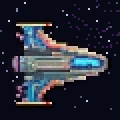
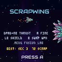
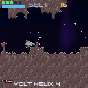
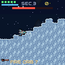

A gravity cave-flyer crossed with an R-Type roguelike. Fly a salvaged fighter through procedurally generated alien sectors, strip weapons from the ships you destroy, and splice them into something monstrous. One life. Death is the end of the run.



Entering a warp writes a bookmark: quit any time and A RESUME from
the title picks up at the start of that sector with your full inventory. It is a bookmark,
not a checkpoint — death deletes it. This is a roguelike.
Your ship is always falling. Flying is throttle management — feather the thrust, don't fight the cave.
Every weapon is a gene: a firing pattern × an element × a level (1–9) × up to four mods. Enemies fire the exact gene they carry — and drop it when they shatter. 8 patterns × 6 elements = 48 base combinations, before levels and mods.
| Pattern | Shape | Dmg | Rate | Speed |
|---|---|---|---|---|
| BOLT | single straight shot — the honest workhorse | 1.0 | 5.0/s | 170 |
| TWIN | two parallel bolts | 0.7 ×2 | 4.5/s | 170 |
| FAN | three-way spread | 0.6 ×3 | 3.2/s | 160 |
| WAVE | weaving sine bolt — snakes past cover | 0.9 | 4.5/s | 150 |
| HELIX | two interlaced waves | 0.7 ×2 | 4.0/s | 150 |
| ORB | slow heavy sphere — hits like a truck | 2.6 | 1.8/s | 90 |
| RAIL | hypervelocity slug | 1.6 | 2.2/s | 320 |
| SCATTER | five-shot random spray | 0.5 ×5 | 2.6/s | 180 |
Each level adds +18% damage and +6% fire rate. A level 9 gene nearly triples its base damage.
| Element | Signature | On hit |
|---|---|---|
| PULSE | clean gold bolts | +15% raw damage — no gimmick, just more |
| PLASMA | fat liquid globs | oversized hit radius — forgiving aim |
| FIRE | flame tongues + smoke | splash damage to everything nearby |
| VOLT | crackling static | chain lightning arcs to the nearest other enemy |
| VENOM | dripping acid | poisons the target — damage over time |
| VOID | dark wake | innately pierces through the first target |
| Mod | Letter | Effect |
|---|---|---|
| HOMING | H | shots seek the nearest foe |
| PIERCE | P | drills through up to 3 targets |
| SPLIT | S | bursts into two sub-bolts on impact |
| BOUNCE | B | ricochets off terrain up to 3 times |
The heart of the game. Two genes go in, one comes out — and the result is live-fired in front of you before you commit.
MENU), highlight a weapon, press RB to
take it to the bench as the base. Pick a core with the D-pad.+ / red − numbers.LB swaps base and core instantly — fusion is order-dependent, so
always check both directions.A commits: both parents are consumed, the child is equipped.Your pause screen, armoury and record-keeper. The game world holds its breath while you're in here (except in duels — see below).
A equips, RB sends it to the Fusion Bench.LEFT/RIGHT to flip the pane): kill count and every
powerup collected this run as an icon grid. Press DOWN past the last
weapon to enter the grid, then A on any powerup for a detail popup
explaining exactly what it does.Rare orbs dotted through the sectors — grab them, they don't wait forever. The Run Log remembers everything you've taken.
| Powerup | Effect |
|---|---|
| SHIELD CELL + | max shield +0.75 and a full recharge |
| REPAIR KIT | restores 2 hull |
| NOVA! | instant blast wave — heavy damage to every foe in range |
| OVERDRIVE | fire rate +40% for 20s |
| DAMAGE AMP | damage +50% for 15s |
| AFTERBURNER | thrust +35% for 20s |
| GHOST FIELD | phase through all damage for 6s |
| WEAPON LEVEL UP | equipped weapon gains a level (max 9) |
| SCRAP CACHE | +25 scrap |
| BOMB BAY | drops fire bombs beneath you while firing, 25s |
| TAIL GUN | rear shots while firing, 25s |
| VERT CANNONS | up + down shots while firing, 25s |
| DRONE WINGMAN | an orbiting drone snipes nearby foes, 30s |
| REFLECTOR | deflects enemy shots away, 20s |
| MAGNET CORE | pulls pickups to you, 30s |
| CHRONO MINES ×3 | three mines auto-deploy behind you |
| HULL OVERCHARGE | max hull +1 (up to 8) and +1 repair |
Five alien terrains, each with its own enemies, scenery — grown fresh every sector — and two environmental hazards. Hazards telegraph with a shimmer before they strike, appear from sector 2, and multiply as you go deeper.
| Biome | Terrain | Hazards |
|---|---|---|
| CAVERN | violet crystal caves — home turf | ceiling rockfall · stalactites that jiggle, snap off and fall |
| HIVE | red flesh tunnels | heavy pod drops · ceiling growths venting columns of acid rain |
| GLACIER | blue ice shelves | accelerating icicles · cryo jets blasting from floor or ceiling |
| SPORE PIT | green fungal depths | rising pods that pop · drifting miasma clouds that sting on contact and don't dissipate — fly around them |
| EMBER FORGE | molten rock and gold ore | volcanic vents lobbing lava balls · eruptions of liquid magma spray |
417 enemy airframes and 78 dreadnoughts, every one a fixed identity: the same sprite always carries the same class, weapon gene, name and biome.
A discovery index of everything you've fought: ships, bosses and weapon combos. New finds pop a toast in the corner mid-run.
MENU) or the Hangar (LB).
LB/RB switch tabs, A opens an info page.< >. Each airframe brings its own starting
weapon gene into the run.1v1 deathmatch between two linked units — USB cable, LAN or Internet (via Mote Studio). Your collection airframe is your duel ship.
RB on the title to open the multiplayer lobby. Once paired,
both pilots drop into the same seeded sector — full scenery and hazards,
no AI — spawned at the ¼ and ¾ points, facing each other.MENU
twice forfeits.Short thrust pulses beat held thrust everywhere except open shafts. Most early deaths are wall impacts, not enemies.
The shield eats hits but drains fast and only recharges while lowered. Flash it for bullet walls and hazard passes — don't cruise with it up.
Sector scaling outpaces raw pickups. Funnel your salvage into one high-level gene with mods rather than hoarding eight mediocre ones.
The warp tear shows the next biome. Heading into the ember forge? Spend your repair kit first. Glacier next? Expect vertical icicle lanes.
Hunting a specific airframe? Its class and biome are fixed — farm its home biome and check part progress in the catalogue (5 parts = flyable).
The save is written when you warp. If a sector is going badly, surviving to the tear is worth more than any pickup behind you.